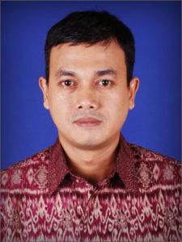

Kami Membuka Pelayanan Pengurusan SKA/SKT Satu Hari Jadi (one day service)
Pengurusan SKA SKT satu hari jadi merupakan pelayanan super cepat dimana tim kami bekerja secara sistematis dan kami bekerja hingga 24 jam yang mana staff kami bekerja siang malam dan terbagi menjadi 3 shift. kami juga membantu pemberkasan permohonan SKA dan SKT dari klien kami.
Biaya Pengurusan SKA/SKT One Day Service (Satu Hari Jadi)
Biaya Pengurusan SKA One Day Service (Satu Hari Jadi)
SKA kualifikasi Muda Rp. 1.950.000,-
SKA kualifikasi Madya Rp. 2.950.000,-
Keterangan:
untuk SKA Utama tidak berlaku One Day Service, proses yang berlaku untuk SKA Utama yaitu sekitar satu bulanan, dengan biaya Rp. 8.000.000
Biaya Pengurusan SKT One Day Service (Satu Hari Jadi)
SKT Kelas 1 Rp. 1.000.000,-
SKT Kelas 2 Rp. 900.000,-
SKT Kelas 3 Rp. 800.000,-
Berkas yang perlu dilengkapi untuk permohonan SKA SKT One Day Service yaitu:
Berkas Yang Perlu Dilengkapi Untuk Pengurusan SKA One day Service (Satu hari Jadi)
- Ijasah
- KTP
- NPWP
- Photo
Berkas yang perlu dilengkapi untuk permohonan SKT One Day Service (Satu Hari Jadi) yaitu:
- Ijasah
- KTP
- Photo
Data yang kami terima boleh dalam bentuk softcopy/scan yang di email ke suhutender@gmail.com
Untuk informasi dan pengajuan permohonan pengurusan SKA SKT bisa mengirim email ke suhutender@gmail.com atau bisa hubungi kontak person dibawah ini.

Nama : Victor
Mobile : 082245000490
Email : suhutender@gmail.com
{kind=link}